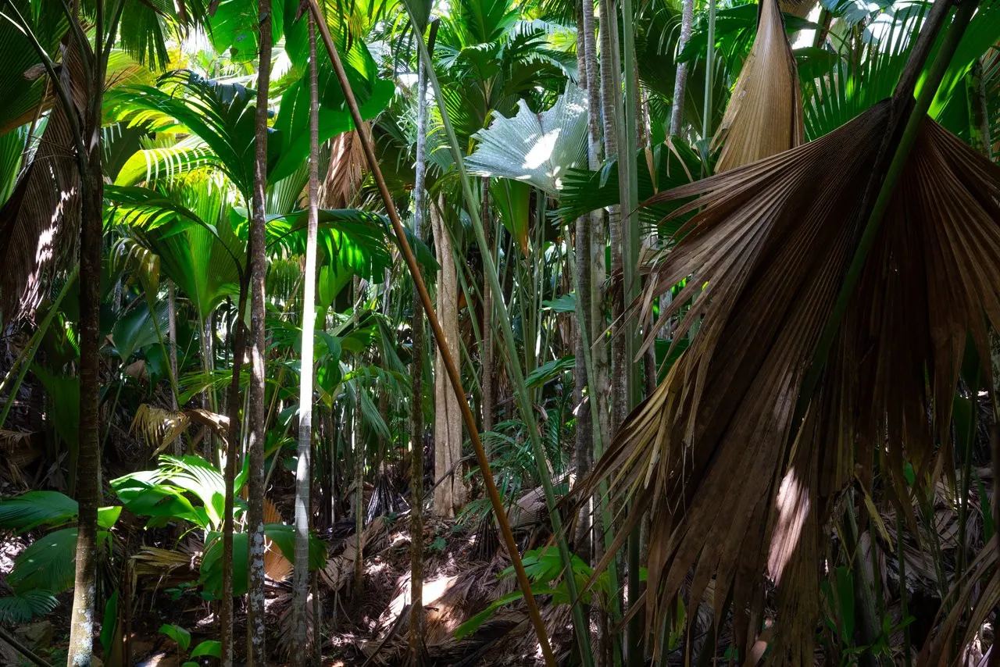
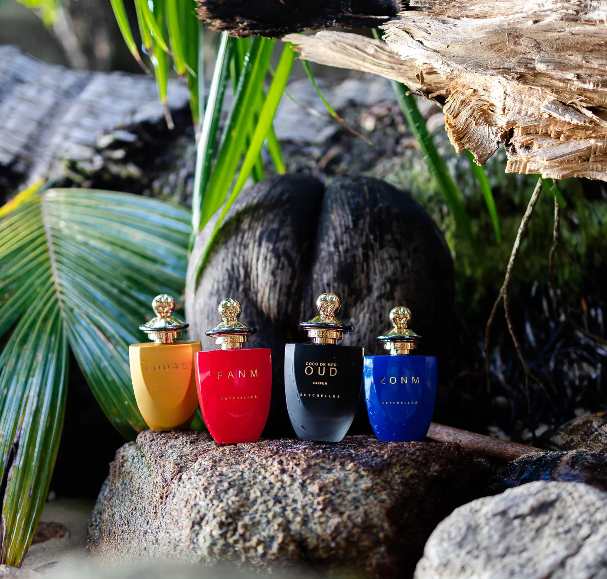

The Legend of the Coco de Mer

Long before Time, the supreme one sang the world into being.
When all creation had emanated from his heart, his creation song had become a being of its own. A beautiful conch shell of a thousand mesmerizing colours and shades.
Its beauty could not lie hidden for long, before a nymph of the sea yearned to wield its power.
Once she learnt the song by heart, the creation spread through all the waters of the world, carving lagoons, bays, and cliffs out of the earth.
Her waters reached the heavens and rained down upon the earth, sculpting it as she so desired.
The earth keeper, who at first was enraged by the desecration, found his resolve of war diminishing as he marvelled at the beauty of the water goddess and her powers. He instantly fell in love and begged the goddess to share the secret with him. Through her, he learnt the secrets of fire raging beneath the earth’s surface. Together they sang of snowy mountain tops, erupting volcanoes, coral atolls and magical places where fire meets Ice.
It was not long before the supreme one discovered that they had stolen the power of creation. This incurred his wrath and he resolved to kill the lovers. They sought shelter in the oldest sacred forest, the original Eden once built by the creator himself. However, they were soon found, and sentenced to death.
As they lay holding one another in loving embrace, the supreme one stood in awe as he marvelled all they had sung, and the new life they had built. He found he could not himself destroy them, for they had become gods themselves.
At that point, another song was sung, which hoisted the garden high into the air, where it travelled across the seas to the farthest ocean, and there it landed in the deep waters to form an Island. There the two gods were transformed into two magical trees. Bound together forever, singing to each other but doomed never to leave the Island again.

You can still see them today on the Island of Praslin, in the garden of Eden where they still embrace. The song, emanating in the form of a powerful fragrance, flies on the breeze enthralling all lovers, whispering its secrets.
A few years ago a cosmetics company, the Coco De Mer Collection of the Seychelles, decided to uncover the secrets of the Coco de Mer.
The Essence of Seychelles, the heart of the Coco de Mer’s mystery is found in each perfume of the Collection. We offer not only a product, but a discovery of the long lost legend of the Coco de Mer through an enticing experience which takes the wearer back to the enchanted places, in a time when gods walked the earth.
